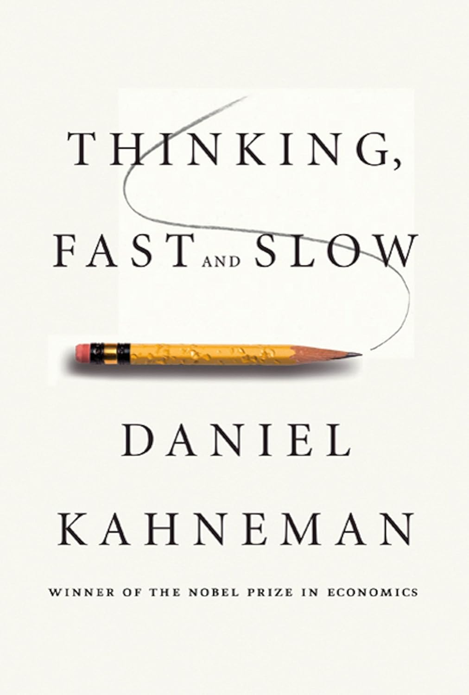
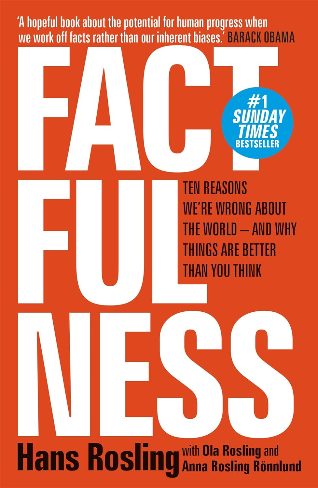

Passionate, razor-sharp, brimming with energy and humour, a must-read about modern Britain and womanhood … Dazzling.
- Booker Judges, 2019
BOOKS
These books have accompanied me in recent years.
★
Girl, Woman, Other
Girl, Woman, Other follows the lives of each of 12 principal characters as they navigate the world. The book is divided into four chapters, each containing episodes about three people who are connected directly to one another in some way, the majority as relatives (such as mother and daughter). Although each character has their own chapter set across a particular time, their lives intertwine in numerous ways – from friends and relatives to chance acquaintances. ★
GRM
GRM. Brainfuck (with GRM pronounced as Grime) is a dystopian novel by the German-Swiss author Sibylle Berg. The novel is set in the near future in the English town of Rochdale and describes the lives of four teenage friends. They belong to the so-called lower class, and their everyday life is characterised by poverty, unkindness and brutality. The author also addresses social developments, such as a universal basic income and a surveillance system, in the course of the novel.★
Hitchhiker's Guide to the Galaxy
The Hitchhiker's Guide to the Galaxy is a comedic science fiction classic that follows the misadventures of Arthur Dent, an unwitting Earthling who is swept off our planet just before its destruction. Infused with satirical commentary on bureaucracy, absurdity, and the meaning of life, Adams' masterpiece has garnered a cult following, offering a delightful blend of intergalactic escapades and philosophical musings.

★
Thinking Fast and Slow
In his mega bestseller, Daniel Kahneman takes us on a groundbreaking tour of the mind and explains the two systems that drive the way we think. System 1 is fast, intuitive, and emotional; System 2 is slower, more deliberative, and more logical. The impact of overconfidence on corporate strategies, the difficulties of predicting what will make us happy in the future, the profound effect of cognitive biases on everything from playing the stock market to planning our next vacation.

★
Factfulness
Factfulness is a 2018 book by Swedish physician, professor of international health and statistician Hans Rosling with his son Ola Rosling and daughter-in-law Anna Rosling. In the book, Rosling suggests that the vast majority of people are wrong about the state of the world. Rosling recommends thinking about the world as divided into four levels based on income brackets (rather than the prototypical developed/developing framework) and suggests ten instincts that prevent us from seeing real progress in the world.★